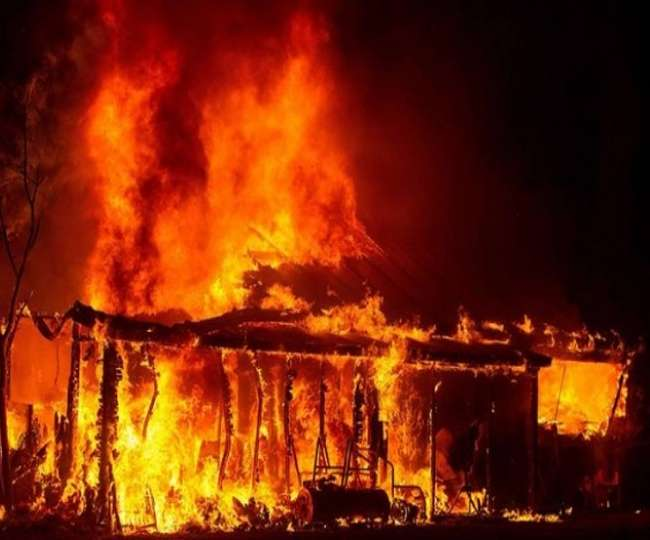

Após Tarzan conseguir escapar de duas situações perigosas, ele vai para o acampamento de Jane. Chegando no acampamento, Tarzan vê que o acampamento está em chamas e teme por Jane ainda estar dentro da barraca.
1 - Tarzan dá seu berro para chamar Jane e ver se ela está segura fora da barraca.
2 - Tarzan entra na barraca a procura de Jane.